WaitWell
Case study
- Role
- Product concept
UX research
UX/UI design - Type
- Personal project
- Timeline
- Dec 2025
- Tools
- Figma Make
Claude
What is WaitWell
WaitWell is a text-message service designed to improve the NHS A&E waiting experience. When patients check in, they can choose to receive a text with a personal link. The link opens in their phone's browser, with no app to download, and gives patients and their companions real-time updates about their care journey: which stage they are at, their place in the queue and roughly how long they will wait. This helps them understand what is happening and what comes next. I designed it as a concept for a single London NHS hospital, using King's College Hospital as the example.

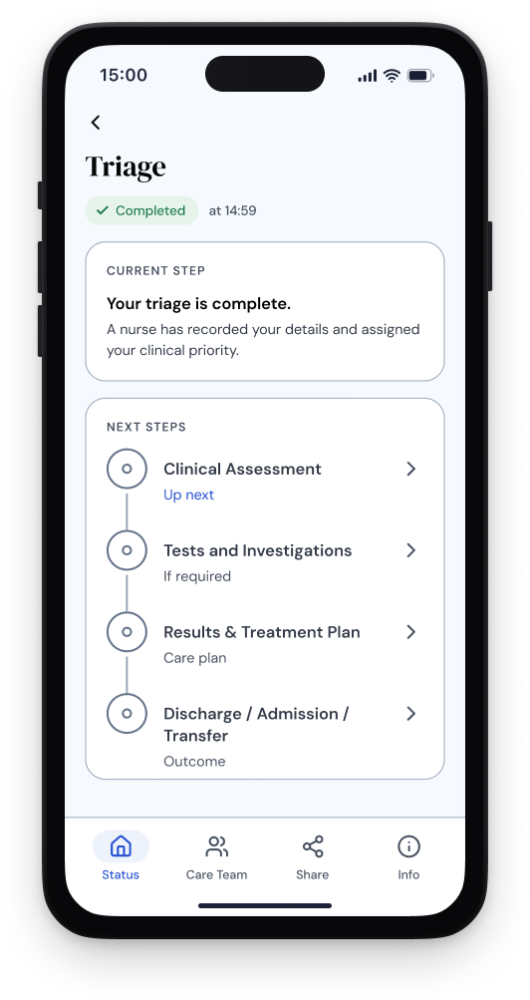
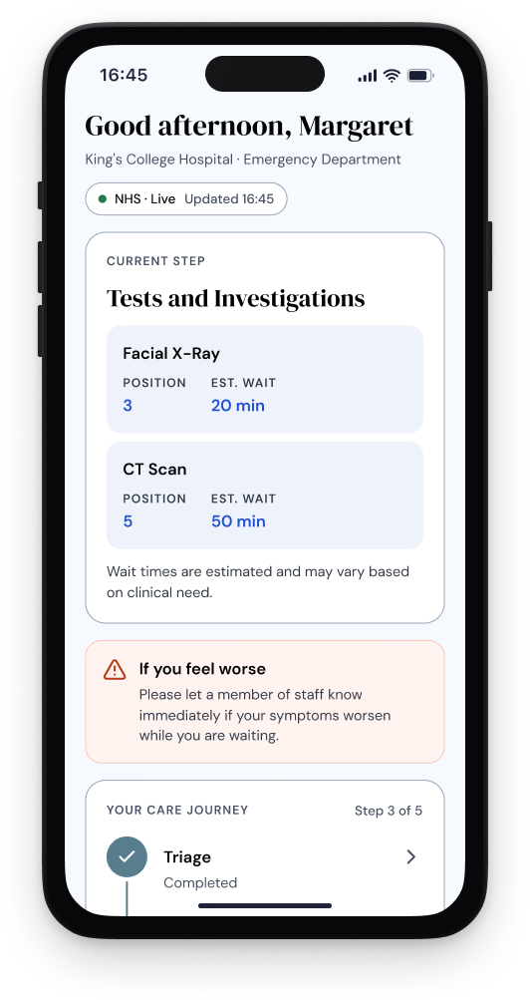
Why WaitWell
Every year, millions of people walk into an NHS A&E department and end up in a waiting room with only vague updates, no clear timeline and no idea what comes next. I wanted to design for the human side of this problem rather than the clinical side. What does it feel like to sit in pain for four hours, not knowing if you're next or last? This project let me apply accessibility-first thinking, NHS Service Standards and emotional UX principles to a problem that affects almost everyone at some point in their life.
Who it's for
WaitWell is designed for anyone attending an NHS A&E department, with a focus on:
Adults over 55, who are more vulnerable in A&E and may have reduced mobility.
Carers and family members accompanying a patient, who need updates but have no formal role in the system
People experiencing anxiety or distress, for whom uncertainty significantly amplifies their stress
Non-native English speakers, who struggle with clinical language and system-specific terminology
Pain points
01
Patients don't know how long they will wait or what happens next.
02
Language barriers and medical terms leave patients unsure of their category or why others are seen first.
03
Patients worry they will miss their turn when names are called out, often mispronounced, across a loud, busy waiting room.
04
Repeatedly asking staff for updates adds pressure to an already busy team.
Personas
"Two hours. Not one update. Is anyone actually coming?"
Sophie, 37, is a project manager in Peckham who lives with an anxiety disorder. She came in with sharp stomach pain two hours ago, and with no idea what happens next or how long it will take, her mind fills the silence with the worst possible outcomes.
"Every time the door opens, I think it might be me."
Graham, 66, is a retired electrician in Camberwell with hearing loss and arthritis in his hands. He has been waiting three hours with a swollen knee after a fall in his garden, and he can't easily get up to ask at the desk. In the noisy waiting room his name is even harder to hear, and he's afraid he'll miss it.
The problem
NHS A&E departments are under heavy pressure, and patients feel it. After triage, most people wait with little or no update. They don't know their place in the queue, what their triage category means, or who to ask. For elderly patients, people with anxiety, and people whose first language isn't English, it's even harder.
With no digital call system in place, staff call names out across a crowded waiting room. In a city as diverse as London, names are often mispronounced, and patients can't tell whether they've already been called and missed it. This also drains time and energy from an already overstretched clinical team.
The result is a cycle of stress, repeated questions at the desk, and patients who feel invisible in a system that's meant to care for them.
The wait is a system problem, but making the wait more humane is a design opportunity, and that is WaitWell's main goal.
Research
Before designing anything, I looked at how A&E waits are currently handled in the UK and abroad.
01
Existing wait-time apps help the user choose where to go, but they stop at the door.
02
Check-in and queue systems start at arrival, but they are built mainly around operational efficiency.
03
A&E care tracking software in the US came closest, with SMS access and step-by-step guidance.
In the UK, most digital tools in A&E focus on the front door: self check-in, triage and queue position. Full-journey guidance exists in the US and some EU countries, and is only starting to appear in the NHS, inside individual trusts' own apps that patients need to download.
WaitWell fills this gap: a patient-centred guide from triage to discharge.
The research shaped every key feature in WaitWell:
01
Explain each step in plain language, not just a queue number.
02
Notify patients when their turn is close, so they don't have to listen for their name.
03
Send automatic delay messages, so no one is left in silence.
04
Let loved ones who can't be there follow the patient's status live.
05
Build accessibility into every screen: large text, high contrast and multiple languages.
06
Share progress, not results: anything medical is explained by the doctor in person.
07
Show which doctor is looking after the patient.
08
Put hospital information in one place: pharmacy, cafés, prayer rooms, interpreter services and PALS.
Design process
Information Architecture
![WaitWell information architecture. An SMS link opens the Status home page. From there, the patient can open each step of their journey: Triage, Assessment, Tests and Treatment plan each move from Waiting to In progress to Completed, and Tests can show a delay notice. Discharge covers going home, admission or transfer. The other tabs are Care team (names and roles of the clinicians), Share (invite someone to a companion view) and Info, which holds Facilities (pharmacy, cafes and shops, toilets, prayer room, Wi-Fi, hospital map) and Help (BSL, accessibility, quiet room, PALS, overseas patients). SMS updates, sent when a step starts, a delay happens or the patient's turn is close, open the screen for the current step.](../assets/img/waitwell/waitwell_ia.svg)
Wireframes
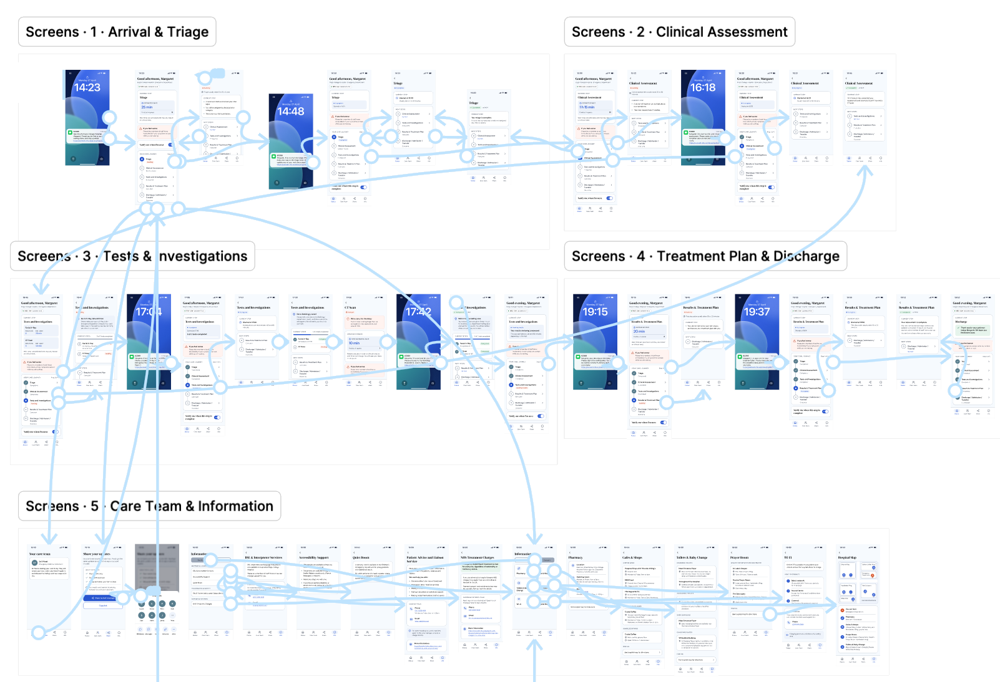
Open the wireframes at full sizeUser flow
![WaitWell care journey. After triage, the patient gets a text with the WaitWell link and opens the Status page at Triage, with an estimated wait and an option to turn on notifications. If they feel worse, they tell staff. Each step (triage, clinical assessment, tests and treatment plan) moves from waiting to in progress to completed, with a text when a step starts or finishes. During tests, a delay notice explains if things are running late, and a text says when results are ready. After the treatment plan, the patient is discharged, admitted or transferred.](../assets/img/waitwell/waitwell-user-flow-1.svg)
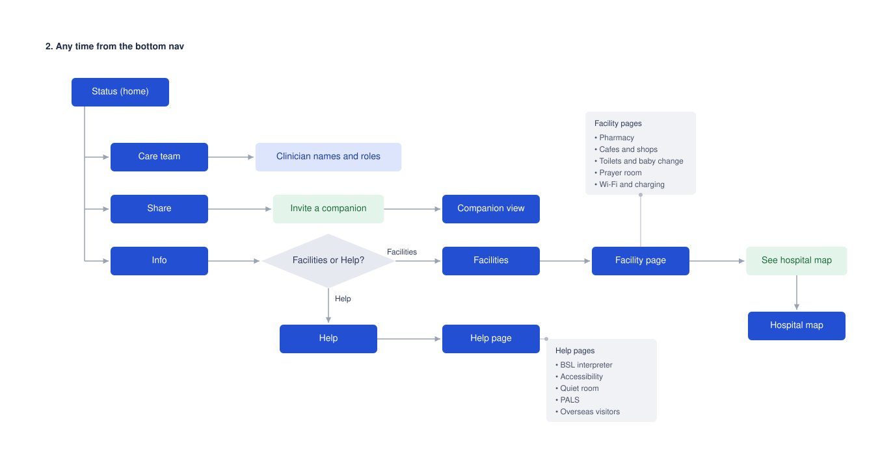
Iterations
 Open the iterations at full size
Open the iterations at full size
Final product
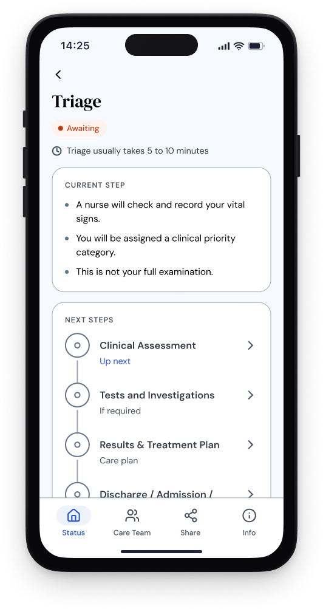
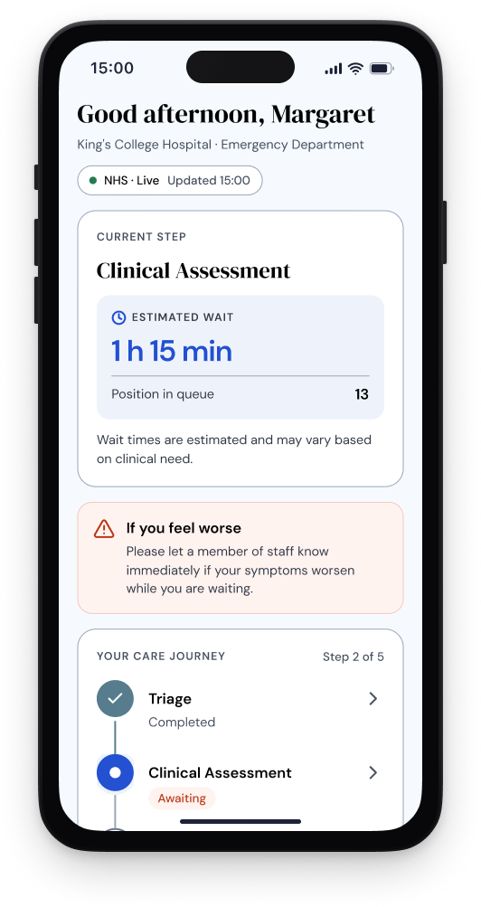
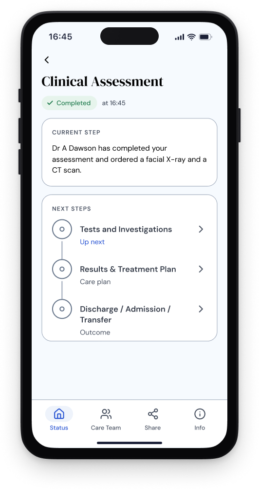
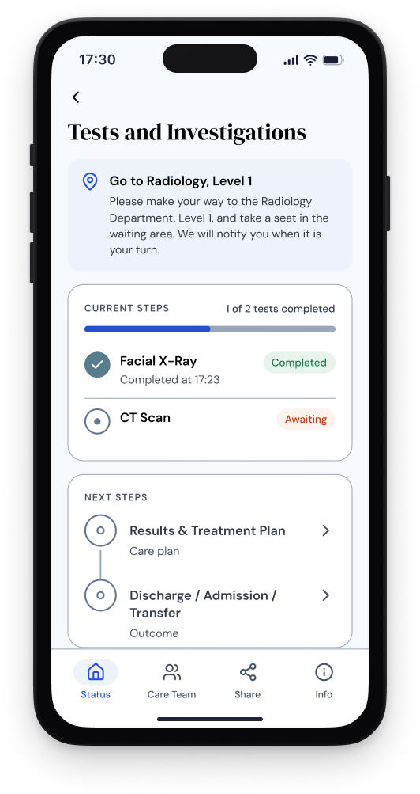
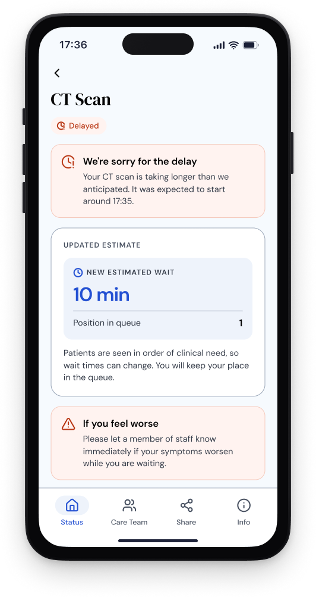
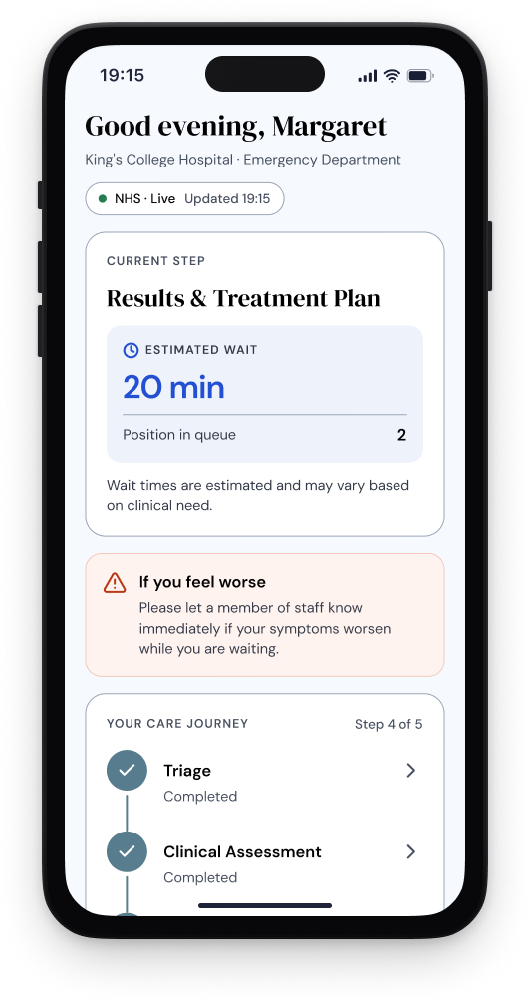
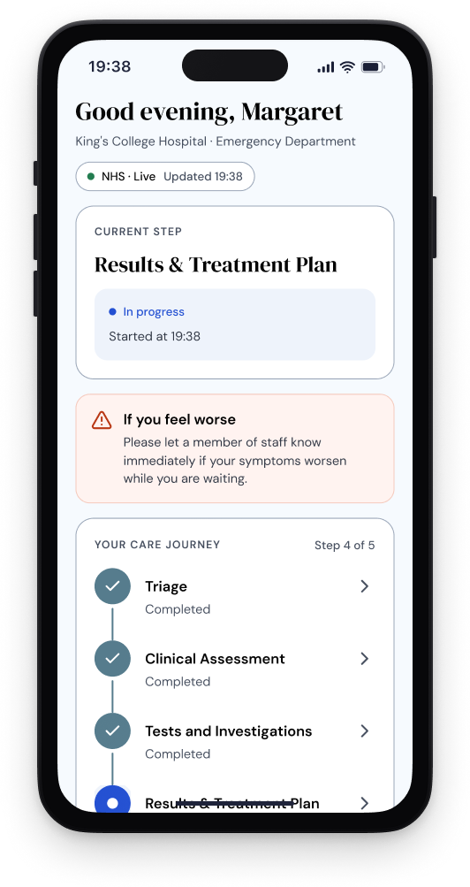
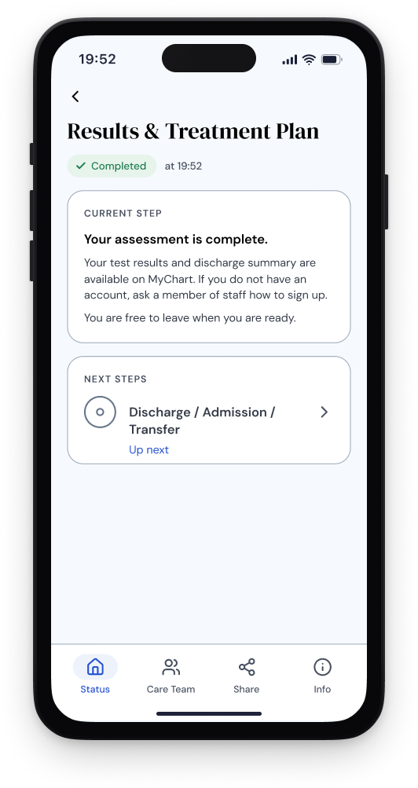
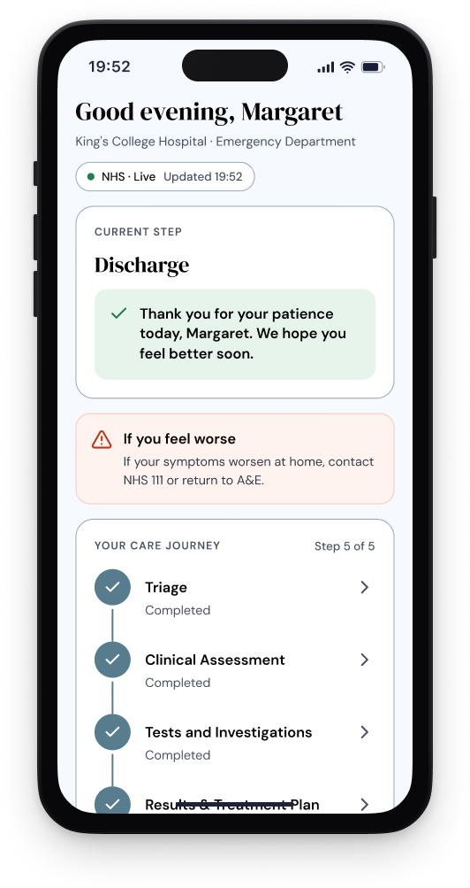
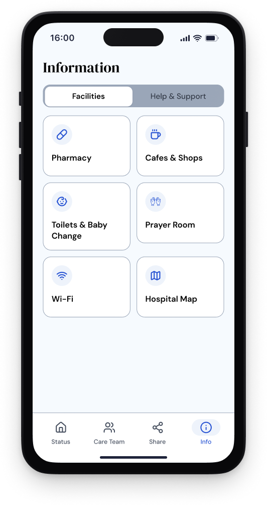
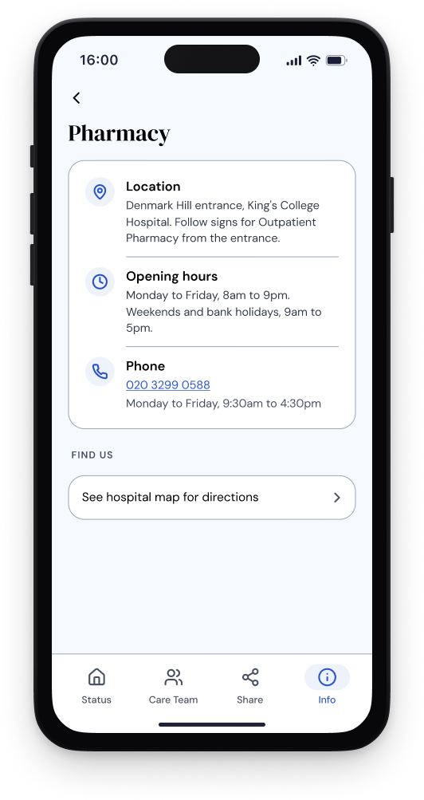
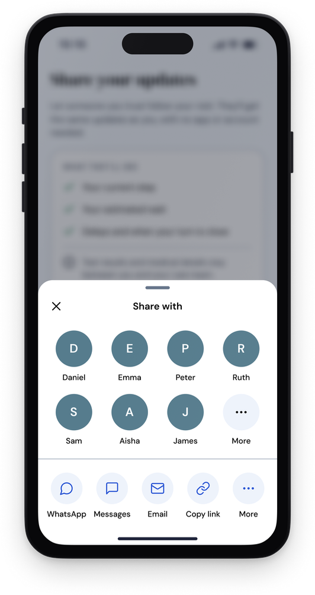